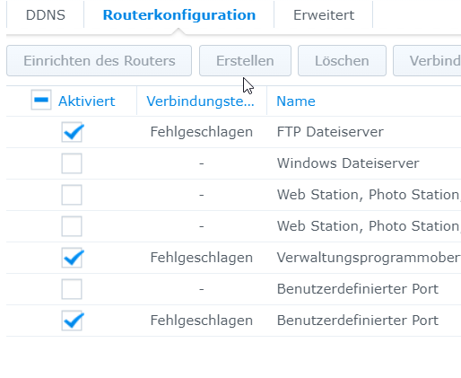

Hallo an alle und ein Frohes Neues Jahr
Ich habe seit mehreren Tagen oben genanntes Problem. Ich versuche einen FTP Server von extern zu erreichen.
Ich habe hier die Magenta Connect Box mit IPv6, sie hat keine Port Forwarding Option aktiv.
Ich habe eine DDNS Adresse über Synology bezogen, welche auch aktiv ist und soweit in der Synology als normal (grün) angezeigt wird.
Ein Port Scan ( http://www.ipv6tech.ch/ ) zeigt an, dass Port 21 und Port 22 offen sind, das geht auch am Handy extern, da wird es auch angezeigt.
Ich habe in der Connect Box folgendes unter IPv6 Filter eingetragen:
{kind=link}
Ich kann intern auf den FTP via Filezilla zugreifen, extern geht es nicht.

In der Synology habe ich den Kombatibilitätstest gemacht, dieser läuft auch durch, aber wenn ich die Verbindung teste, kommt bei allen zu überprüfenden Anwendungen "fehlgeschlagen".

Kann hier vielleicht jemand weiterhelfen? Ich weis, dass ich bestimmt die 100te Anfrage zu dem Thema und ich habe mir auch schon einiges hier durchgelesen, aber immer an der Stelle wo es spannend wurde, sind die threads nicht mehr weitergeführt worden.
Vielleicht hat jemand eine Idee oder kann sagen wie das genaue Vorgehen ist? Ich wäre echt super dankbar, das raubt einem den Nerv.